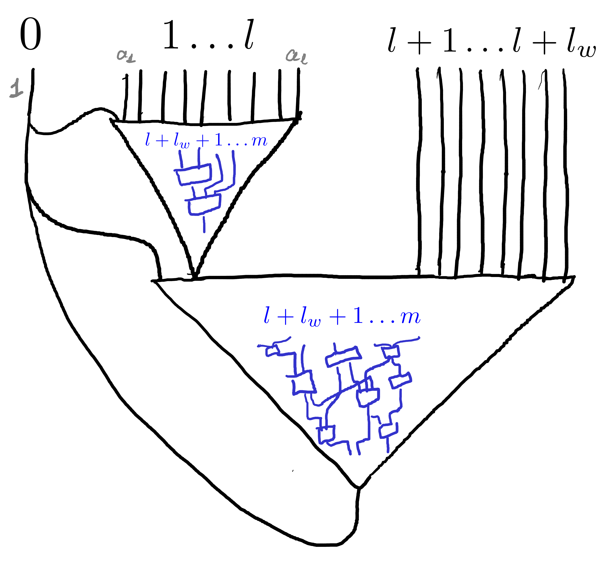
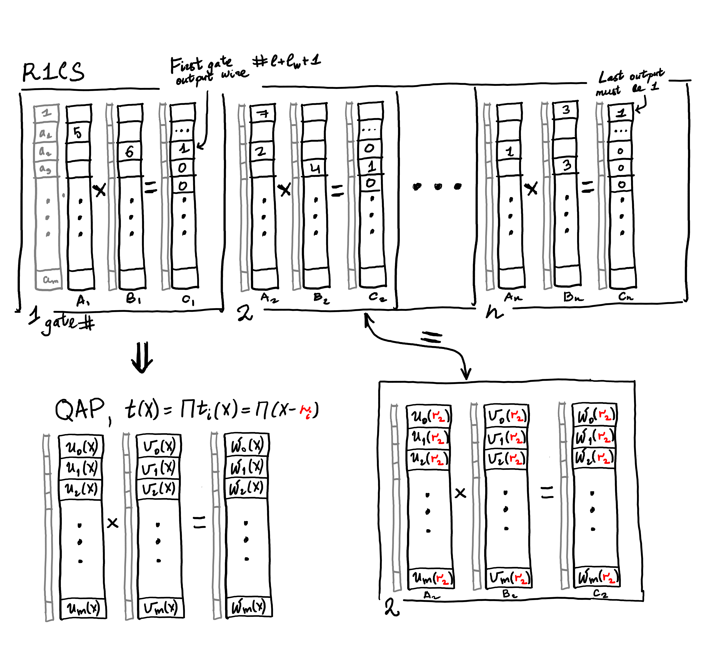

Linear Relations on QAP Polynomials
Table of Contents
(this is a copy of the note originally posted here as part of PRIViLEDGE project, part of EU 2020 HORIZON; however that website seems to have died)
To use zk-SNARKs in bigger protocols, we must prove their security in an "extended" environment, that is considering all possible interactions of the zk-SNARK primitive with other protocols. Universal Composability (UC, [1]) is a security framework that allows modelling precisely that, and it is a common target for security proofs of protocols, aimed at privacy and zero-knowledge [2,3,4,5]. However, one cannot use zk-SNARKs in UC proofs directly — this is a known issue stemming from the fact that (standard model) SNARKs are succinct, and thus inherently white-box [6], which intuitively means that security definitions must assume knowledge of the code of the adversary. Such an assumption is stronger than what UC works with, and therefore one must resort to alternative techniques. One option is to use a non-succinct NIZK (e.g. Gro06 [7]), but this comes at the cost of performance, and may even render the protocol impractical. Another way is to apply certain transformations that make a SNARK black-box secure (e.g. C0C0 framework [16]).
In our recent work [8], we show two results that help to overcome this problem. First, we investigate a new security notion, which allows proof randomization (called weak SE), and show that Groth16 SNARK [9], which is nearly-optimal and is commonly used, achieves it. Second, we show that with the help of this new security notion one can build black-box constructions that realize a (randomizable) UC functionality. This is often enough for practical applications, and comes at a smaller performance overhead than heavier transformations.
In this article, however, we focus on a technical detail that arises in our work, and which was observed before. This detail is a QAP linear and span independence requirement, that is assumed by our security theorems. We believe that this property, although investigated before, was not sufficiently explained, and this article tries therefore to fill this gap.
1. QAP and R1CS
We first remind the reader how arithmetic circuits are constructed and what a Quadratic Arithmetic Program is.
Consider an arithmetic circuit \(C\) over the prime field \(\mathbb{F}_p = GF(p)\), that is a set of wires and gates computing some value, where the gates are multiplicative and of the following form. From the set of all \(m\) wires with values \(a_1 \ldots a_m\), the gate outputs \[(k_0 + a_1 k_1 + \ldots + a_m k_m)(c_0 + a_1 c_1 + \ldots + a_m c_m)\]where \(k_i, c_i\) are field elements specific for this gate. That is, each multiplication gate also includes additive gates to linearly pre-combine the input values. Let \(n\) be the number of such gates. Note that since each gate has an output wire (which cannot be used as its input, nor can its dependencies), \(m > n\). The difference between the two is the number of circuit input wires. Let us say that these are split into two categories: \(l\) public input wires, and \(l_w\) private input wires (these correspond to the NP instance and witness). We assume that there is a single output wire of a circuit that is connected to the wire 0 with constant value 1. The following image illustrates the general structure of a circuit; grey labels are "wire values", and blue is used to denote the "internal wires". The upper left triangle is a possible "public input data computation", which is highlighted only to emphasize that not all internal computations involve witness wires.

Now, a Quadratic Arithmetic Circuit ([15], QAP) for this circuit \(C\) consists of the quotient polynomial \(t(X)\) of degree \(n\), and three sets of polynomials \(\{u_i(X), v_i(X), w_i(X)\}_{i=0}^m\) of degree \(n-1\). The main property of this system is that the assignment \(\{a_i\}\) in \(C\) is valid if and only if \((\sum a_i u_i(X))(\sum a_i v_i(X)) - (\sum a_i w_i(X)) = 0\) modulo \(t(X)\).
Another commonly used circuit representation is R1CS (rank-1 constraint system). In this representation, every constraint corresponds to a multiplication gate of the form we described above, and each such constraint is formed by three vectors: \(A = k\) (vector of coefficients that are used to construct the left input of the gate), \(B = c\) (same, w.r.t. the right input), and the output vector \(C\) with the only \(1\) in the position \(i\) (where \(i\) is the gate output wire index), and all other positions \(0\). So, the "evaluation" of the constraint on the wire assignment \(\{a_i\}\) corresponds to \(\langle\{a_i\},A\rangle\cdot\langle\{a_i\},B\rangle = \langle\{a_i\},C\rangle = a_j\) (angle brackets denote dot product). We use the notation \((A_j,B_j,C_j)\) to refer to the description of constraint number \(j\).
The QAP equation can be thought to evaluate all these constraints simultaneously. The polynomial \(t(X)\) is defined as a product of \(\prod_{j=1}^n t_j(X) = \prod_{j=1}^n X - r_j\), with \(r_j\) distinct, each corresponding to a multiplication gate (thus degree \(n\)). If \(\sum a_i u_i(X)\) is viewed as \(\langle \{a_i\}, U(X)\rangle\), with the second element being a vector of \(u_i(X)\), then \(\langle\{a_i\}, U(r_j)\rangle = \langle\{a_i\}, A_j\rangle\). In other words, QAP polynomials interpolate R1CS constraints, and the QAP equation reduces to each constraint when viewed modulo \(t_j(X)\) (e.g. when we evaluate \(X = r_j\)).
Here is how it looks like. On the top we present R1CS constraints evaluated on some (grey) vector of wire values. On the bottom we show a corresponding QAP, which is, when evaluated on \(X = r_j\) (or equivalently viewed modulo \(t_j(X)\)), becomes the second R1CS constraint.

2. QAP Linear Independence Requirement
In our weak SE proof of Groth16 (and also in the proof of our second black-box construction), we use the assumption that \({u_0(X) \ldots u_l(X)}\) are linearly independent (LID), and that furthermore the span of this set does not intersect with the span of \({u_{l+1}(X)\ldots u_m(X)}\), that is the two sets are mutually linearly independent. This assumption was introduced previously, and it also appears, for instance, in Groth-Maller17 [10], and [11]. But what is the intuition behind this property, and why is it reasonable to assume it?
First, recall that by linear independence of \(\{u_i(X)\}_{\mathcal{I}}\) for some \(\mathcal{I}\) we have that \(\forall k_0 \ldots k_l \in \mathbb{F}_p \ldotp\) \(\sum_{\mathcal{I}} k_i u_i(X) = 0\) implies \(k_i = 0\) for all \(i \in \mathcal{I}\). We interpret polynomials as vectors in \(\mathbb{F}_p^n\) (since the degree of \(u_i(X)\) is \(n-1\)). Immediately we notice that it is not possible for the whole set \(u_0(X) \ldots u_m(X)\) (similarly for \(v_i(X)\) and \(w_i(X)\)) to be linearly independent. The polynomials are of degree \(n-1\), and there are \(m+1\) of them, where \(n\) is the number of gates and \(m\) is the number of wires. Since each gate has exactly one output wire, \(m = n + l + l_w\), where \(l\) is the number of public inputs, and \(l_w\) is the number of private witness inputs. Therefore, the maximal possible rank of the matrix with \(u_i(X)\) concatenated (as either rows or columns) is \(n\), and thus full linear independence is impossible. This also means that by requiring \(\{u_0(X) \ldots u_l(X)\}\) LID, we imply \(\{u_{l+1}(X) \ldots u_m(X)\}\) LD (linearly dependent).
3. Relevant Resources
Most of the public resources on the issue lead in one way or another to the following discussion of a bug in the zk-SNARK by Ben-Sasson et al. [11]. The following list attempts to summarize the public information covering the issue of QAP linear independence.
- The zk-SNARK presented in [11] is built on Pinocchio, and its Lemma 2.4, claiming the existence of QAP for circuits, also says that the constructed QAP satisfies a "non-degeneracy" condition. The original version of the paper by this means that \(\{u_i(X)\}_{i=0}^l\) are non-zero and distinct.
- The note by Brian Parno [12] describes a bug that does not appear in Pinocchio, but is present in the original technical (full) version of [11], precisely in this non-degeneracy condition. The bug does not merely add instance-malleability to the proofs, but breaks soundness of the NIZK. The new, revised version of [11], now states (in the same Lemma 2.4) that \(u_i(X)\) are linearly independent for the first \(l\) (input) wires. Furthermore, the new version suggests how to satisfy this requirement: adding \(1+l\) constraints is enough to achieve the non-linearity condition: \(1 \cdot 0 = 0\) and \(a_i \cdot 0 = 0\) for \(i \in [1,l]\).
- The blog post by Least Authority called "A Bug in libsnark" describes this very same bug, but with respect to the particular implementation in
libsnark, in the module that converts R1CS to QAP. More details on the bug are provided, essentially describing the same technique of adding \(n+1\) linear constraints as in the new version of [11]. - The blog post by Alex Pinto, "How to Build a Quadratic Arithmetic Program", following [11], mentions that the non-degeneracy condition constraints must be introduced for conversion from R1CS to QAP, that lead to QAP linear independence, without giving a detailed explanation.
- Ariel Gabizon in the eprint note [13] identifies another issue with [11]. The proposed way to fix it (Section 3) also includes the linear disjointness condition (span independence), as in our work. They notice that this condition is also satisfied in QAP of
libsnark, and also that it appears in a relevant MPC protocol for SNARK public parameters generation [14]. The updated version of [11] now contains this condition too, and the Remark 2.5 now also includes a comment on it.
Other than that, there is little or no information on the LID requirement, and even the presented articles do not explain how exactly does the transformation of [11] work. This note attempts to provide some explanation and description of the mentioned linear and span independence properties.
4. Aligned Linear Independence
It is tempting to intuitively connect the linear independence condition of \(u_i(X)\) with some circuit property. Although it is harder to find a good intuition for standard LID, we explain one such possible interpretation for the weaker case of aligned LID first, which we introduce exactly with this purpose. We say that a QAP has aligned linear dependence if \({(u_{i,0} \ldots u_{i,n-1}, v_{i,0} \ldots v_{i,n-1}, w_{i,0}, \ldots w_{i,n-1})}\) are linearly dependent for some subset of indices \({0\ldots m}\). That is, we consider 3n-vectors \((u_i(X), v_i(X), w_i(X))\) instead of viewing each \(p_i(X)\) (with \(p ∈ {u,v,w}\)) separately.
Assume aligned LD of two vectors first: \((u_1(X),v_1(X),w_1(X)) = k \cdot (u_2(X),v_2(X),w_2(X))\). It is easy to see that if \({a_0 \ldots a_m}\) is a QAP-satisfying wire assignment, then for all \(e \in \mathbb{F}_p\): \[a_1 p_1(X) + a_2 p_2(X) = e p_1(X) + (a_2 + k (a_1 - e)) p_2(X)\] for \(p ∈ {u,v,w}\). Because of perfect soundness of the QAP, this alternative assignment \(\{a_i'\}\), where \(a_1' = e, a_2' = (a_2 + k (a_1 - e))\), and all other \(a_i' = a_i\), must also satisfy the relation. In the circuit, this ad-hoc replacement of two wires in the assignment is possible in several cases. It could be that the wires are free, not used in any gates at all, then any assignment on them satisfies the circuit, and in particular both \(\{a_i\}\) and \(\{a_i'\}\). Or it could also be that \(a_1\) is an input wire, \(a_2\) is an output wire, and between them there is some multi-gate computation \(a_2 = f(a_1, a_3 \ldots a_m)\) with \(f\) linear in \(a_1\).
The example generalizes to aligned linear dependence of many vectors. That is, if a subset of \(n\) 3-vectors is linearly dependent, then we can set any \(n-1\) wires from the corresponding set to arbitrary values \(\{e_i\}\), and the last value will be defined as a linear combination of these \(\{e_i\}\). It could be that these \(n\) wires are not connected to anything at all, or that they form a bamboo (non-branching tree) of trivial multiplication gates: each successive gate output is a linear function of the previous wire.
These few examples should give some intuition about what circuits can have aligned LID, but they do not constitute a complete characterization.
5. Non-Aligned Linear Independence
The non-aligned linear independence of \(\{u_i(X)\}\) is a stronger requirement than the aligned variant we just overviewed: whenever \(\{u_i(X)\}\) are LID, the whole QAP is aligned LID. (This is easy to see, as when we have aligned LD with coefficients \(\{k_i\}\) for some set of indices \(\mathcal{I}\), the same set of coefficients forms linearly dependent combinations for each \(u_i(X),v_i(X),w_i(X)\)). In the previous case of aligned LID we merely used QAP correctness (that is, the QAP equation) to deduce the intuition of linear dependency of wires. Now, to analyse non-aligned linear independence of each \({p_i(X)}\) separately, we will check if this desired linear independence condition can be satisfied by construction [15]. We remind that what we need to achieve for our theorem to go through is: \(\{u_i(X)\}_{0}^l\) LID, and \(\text{Span}(\{u_i(X)\}_0^l) \cap \text{Span}(\{u_i(X)\}_{l+1}^m) = \emptyset\).
Observe that each \(u_i(X)\) modulo \(t_j(X)\) is a coefficient \(A_{j,i}\) that specifies by which the corresponding left input a wire number \(i\) should be linearly scaled before performing gate number \(j\) multiplication. So for a fixed wire number \(i\), \(u_i(X)\) modulo all \(t_j(X)\) gives us the set of all these \({A_{j,i}}\) — all left scalars this wire \(i\) participates in as a left input. If \(u_1(X) \ldots u_l(X)\) are linearly dependent (\(\sum_{i=1}^l k_i u_i(X) = 0\)), then reviewing this sum modulo \(t_j(X)\) for each \(j\) gives us \(\sum k_i A_{j,i} = 0\) (note that \(k_i ∈ \mathbb{F}_p\) does not reduce modulo \(t_j(X) = X - r_j\)). Therefore, if \(u_i(X)\) are LD, then all these equations are satisfied over all \(t_j(X)\): for each gate \(j\), for each corresponding \(A_{j}\), the set of \(k_i\) satisfies the dot product w.r.t. \(A_{j,i}\). On the contrary, what linear independence would imply, is that for any \({k_i}\) there is at least one gate that this combination does not work with. We can achieve LID for a subset of wires by performing a simple circuit transformation, as suggested in [11].
To make the \(u_1(X)\ldots u_l(X)\) linearly independent, we create \(l\) extra gates (let their indices be \(0\) to \(l\) too, so we prepend them to the beginning of the list), where each gate number \(j\) uses exactly one input wire number \(i\) as a left input, and value 0 as a right input. So, for \(j \in [0,l]\) we set \(A_{j,j} = 1\), and all other \(A_{j,i} = 0\), as well as \(B_{j,i} = C_{j,i} = 0\) except for \(C_{j,l+l_w+j} = 1\) (if we assume \(l+l_w+j\) is an index of output wire of gate number \(j\)). Similarly, for \(u_0(X)\) we create a single gate (number \(0\)) that takes the constant wire number \(0\) (carrying constant value \(1\)) with coefficient \(1\), for the left input, and sets right input to \(0\). On the following illustration the additional gates are drawn in green; note that they lack right input, but still have an output wire.

Now, the sum modulo each \(t_j(X)\) for \(j \in [0,l]\) reduces to \(k_j A_{j,j} = 0\). Since \(A_{j,j} = 1\), \(k_j = 0\), and since we do it for each \(j\), each coefficient of the linear combination is zero, and thus it is trivial. So the first linear independence condition is satisfied.
Regarding the second condition, span independence of \(u_0(X) \ldots u_l(X)\) and \(u_{l+1}(X)\ldots u_m(X)\), assume by contradiction that \(f(X) = \sum_0^l k_{1,i} u_i(X) = \sum_{l+1}^m k_{2,i} u_i(X)\) and \(f(X) \neq 0\). When viewed modulo \(t_j(X)\) for \(j \in [0,l]\) (our extra gates), the left hand side becomes \(\sum_0^l k_{1,i} A_{j,i} = k_{1,j} A_{j,j}\). The right side is, similarly, \(\sum_{l+1}^m k_{2,i} A_{j,i}\). But since wires \([l+1,m]\) are not used as left inputs for the gates \([0\ldots l]\) (these gates receive inputs strictly from wires \([0\ldots l]\)), we must have \(A_{j,i} = 0\) for \(i ∈ [l+1,m]\). Therefore, any \(\sum_{l+1}^m k_{2,i} u_i(X)\) is zero modulo \(t_j(X)\) for \(j ∈ [0,l]\), and thus, as before we are only left with LHS \(k_{2,j} A_{j,j} = 0\) which implies \(k_{2,j} = 0\), for each such \(j\). So \(f(X) = 0\), a contradiction, which proves span independence.
This shows why the transformation of [11] is enough to satisfy both conditions necessary for the theorems in our work [8].
The last thing we would like to note is that if we apply the transformation to both public and private witness wires, we obtain aligned LID of all QAP wires.
First we claim that the set \(\{w_0(X), w_{l+l_w+1}(X)\ldots w_m(X)\}\), corresponding to the multiplication-gate output wires (call these indices \(\mathcal{I}_o\)), is linearly independent. Observe that \(w_i(X) = 1 \text{ mod } t_j(X)\) where \(i\) is the output wire of gate \(j\), and it is \(0\) modulo \(t_\iota(X)\) for all other \(\iota\) — hence if the set is linearly dependent, with coefficients \(\{k_i\}\) then \(\sum_{\mathcal{I}_0} k_i w_i(X)\) modulo \(X - r_j\) implies \(k_i \cdot 1 = 0\). Therefore, in every linear combination \(\{k_i\}\) such that \(\sum k_i w_i(X) = 0\), each coefficient is zero, and this set is linearly independent. Since the set is of size \(n\) and each \(w_i(X)\) in it is a n-vector, the corresponding matrix of \(w_i(X)\) concatenated is full rank.
Regarding the input wires set \(\{w_i(X)\}_{i=1}^{l+l_w}\), each element of it is set to be \(0\) modulo each \(t_i(X)\), and thus modulo \(t(X) = \prod t_i(X)\) (by CRT). Since \(w_i(X)\) maximum degree is \(n-1\), being zero modulo \(t(X)\) means being constant zero, so these prefix \(w_i(X)\) (for input wires) are (trivially) linearly dependent.
Now, this means that if we have a nontrivial aligned linear combination, it must include at least one coefficient from the set of input wires \(\mathcal{I}_i := [1,l+l_w]\) (public or private). Otherwise, when the combination of 3-vectors is limited only to gate outputs (\(\mathcal{I}_o = [0,l+l_w+1,\ldots,m]\)), the combination should also hold when viewed over \(\{w_i(X)\}\), but we have already deduced this is impossible because these polynomials are LID. But by the previous argument, as long as \(\sum k_i u_i(X)\) includes some indices \(i \in \mathcal{I}_i\) (assuming both public and private inputs transformed as explained before), all such \(k_i = 0\) — this is, again, due to the fact that only \(\mathcal{I}_i\) wires participate in our "extra" gates as left inputs, and they do it once per each such gate. So we are again in the case of linear combination limited to \(\mathcal{I}_o\), where we have already proven LID for \(\{w_i(X)\}\). Thus, we arrive at a contradiction, and the whole QAP is aligned LID.
6. References
- Canetti, Ran. "Universally composable security: A new paradigm for cryptographic protocols." In Proceedings 42nd IEEE Symposium on Foundations of Computer Science, pp. 136-145. IEEE, 2001.
- Kosba, Ahmed, Andrew Miller, Elaine Shi, Zikai Wen, and Charalampos Papamanthou. "Hawk: The blockchain model of cryptography and privacy-preserving smart contracts." In 2016 IEEE symposium on security and privacy (SP), pp. 839-858. IEEE, 2016.
- Kerber, Thomas, Aggelos Kiayias, and Markulf Kohlweiss. "Kachina-Foundations of Private Smart Contracts." IACR Cryptol. ePrint Arch. 2020 (2020): 543.
- Kerber, Thomas, Aggelos Kiayias, and Markulf Kohlweiss. "Mining for Privacy: How to Bootstrap a Snarky Blockchain." IACR Cryptol. ePrint Arch. 2020 (2020): 401.
- Kerber, Thomas, Aggelos Kiayias, Markulf Kohlweiss, and Vassilis Zikas. "Ouroboros crypsinous: Privacy-preserving proof-of-stake." In 2019 IEEE Symposium on Security and Privacy (SP), pp. 157-174. IEEE, 2019.
- Gentry, Craig, and Daniel Wichs. "Separating succinct non-interactive arguments from all falsifiable assumptions." In Proceedings of the forty-third annual ACM symposium on Theory of computing, pp. 99-108. 2011.
- Groth, Jens. "Simulation-sound NIZK proofs for a practical language and constant size group signatures." In International Conference on the Theory and Application of Cryptology and Information Security, pp. 444-459. Springer, Berlin, Heidelberg, 2006.
- Baghery, Karim, Markulf Kohlweiss, Janno Siim, and Mikhail Volkhov. "Another look at extraction and randomization of Groth’s zk-SNARK." FC 2021 (2021).
- Groth, Jens. "On the size of pairing-based non-interactive arguments." In Annual international conference on the theory and applications of cryptographic techniques, pp. 305-326. Springer, Berlin, Heidelberg, 2016.
- Groth, Jens, and Mary Maller. "Snarky Signatures: Minimal Signatures of Knowledge from Simulation-Extractable SNARKs." In Annual International Cryptology Conference, pp. 581-612. Springer, Cham, 2017.
- Ben-Sasson, Eli, Alessandro Chiesa, Eran Tromer, and Madars Virza. "Succinct non-interactive zero knowledge for a von Neumann architecture." In 23rd {USENIX} Security Symposium ({USENIX} Security 14), pp. 781-796. 2014.
- Parno, Bryan. "A Note on the Unsoundness of vnTinyRAM's SNARK." IACR Cryptol. ePrint Arch. 2015 (2015): 437.
- Gabizon, Ariel. "On the security of the BCTV Pinocchio zk-SNARK variant." IACR Cryptol. ePrint Arch. 2019 (2019): 119.
- Bowe, Sean, Ariel Gabizon, and Matthew D. Green. "A multi-party protocol for constructing the public parameters of the Pinocchio zk-SNARK." In International Conference on Financial Cryptography and Data Security, pp. 64-77. Springer, Berlin, Heidelberg, 2018.
- Gennaro, Rosario, Craig Gentry, Bryan Parno, and Mariana Raykova. "Quadratic span programs and succinct NIZKs without PCPs." In Annual International Conference on the Theory and Applications of Cryptographic Techniques, pp. 626-645. Springer, Berlin, Heidelberg, 2013.
- Kosba, Ahmed, Zhichao Zhao, Andrew Miller, Yi Qian, H. Chan, Charalampos PAPAMAN-THOU, Rafael Pass, SHELAT ABHI, and EC SHI. "C∅ C∅: A framework for building composable zero-knowledge proofs." Cryptology ePrint Archive, Report 2015/1093 (2015).